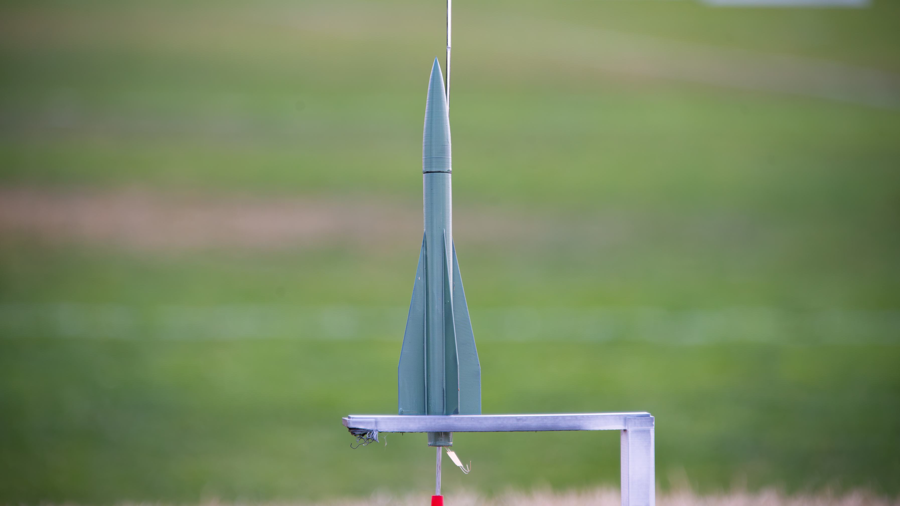
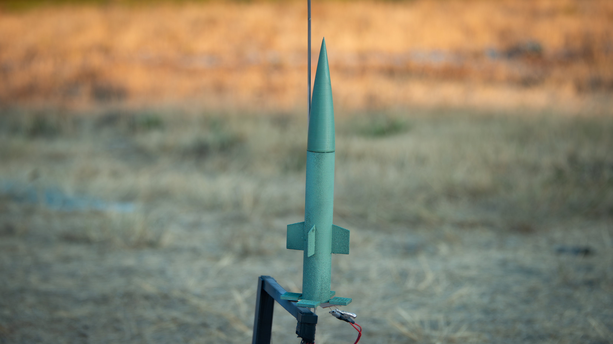
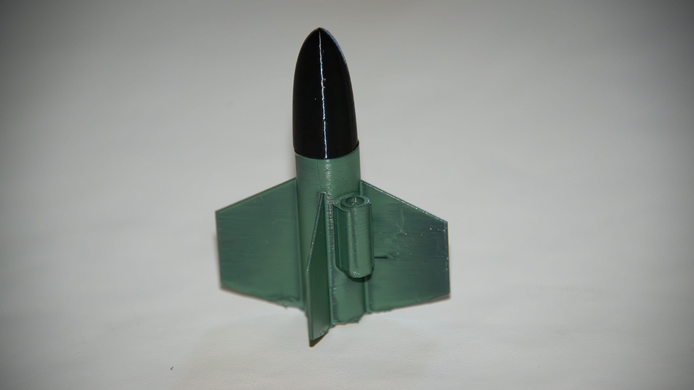
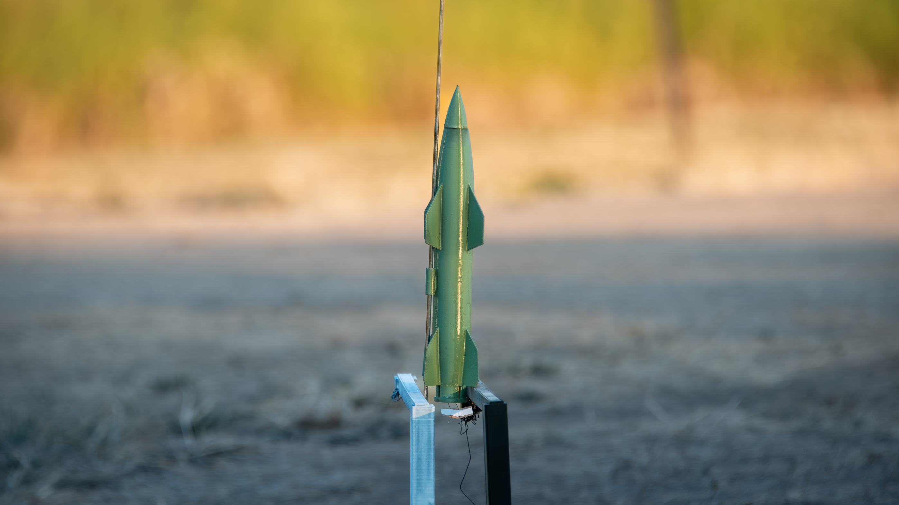
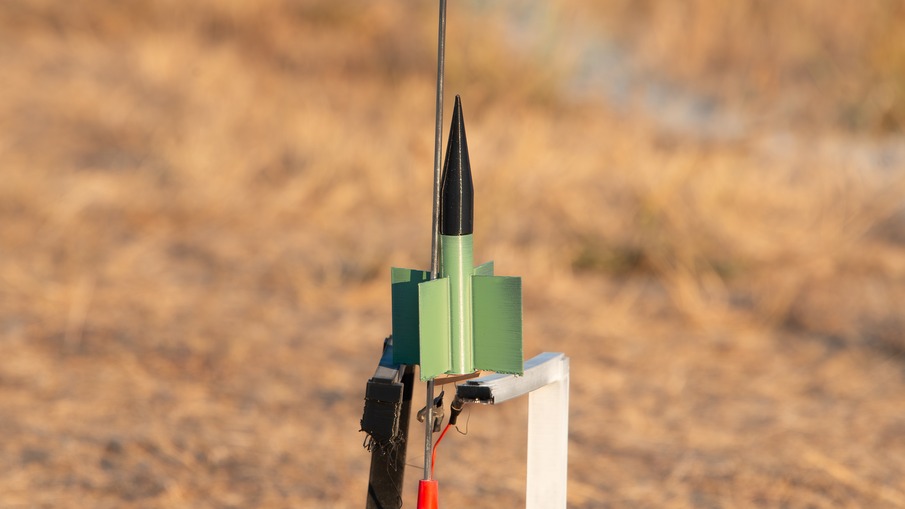

Fig. 1 — Honest John finished build
Flown
Honest John
The first US surface-to-surface rocket that was capable of a nuclear payload.
- Scale
- 1:100
Alongside my own designs, I also enjoy building scale replicas of historically important rockets — either to explore a famous design or to experiment with a conceptual one.
Fig. 1 — Honest John finished build
The first US surface-to-surface rocket that was capable of a nuclear payload.

Fig. 1 — MGM-140 on the launch pad
A short-range supersonic ballistic missile manufactured by Lockheed Martin.

Fig. 1 — The Hawk on the launch pad
An American surface-to-air missile developed by Raytheon. Medium range.

Fig. 1 — Tochka on the launch pad
A Soviet tactical ballistic missile from the 1970s, equipped with grid fins that actually worked quite well on the model.

Fig. 1 — The tiny SS.10
First used in 1955, it was a French anti-tank missile.

Fig. 1 — C2 Wasserfall on the pad
A German supersonic surface-to-air missile of WW2. Developed by Wernher von Braun's team, it never saw combat.

Fig. 1 — The tiny Cobra ATGM
A Swiss/German anti-tank missile entering surface in the 1950s.